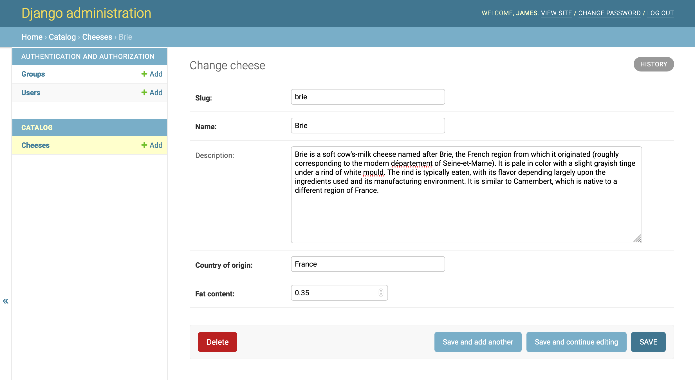
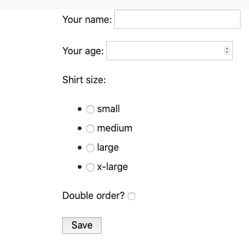
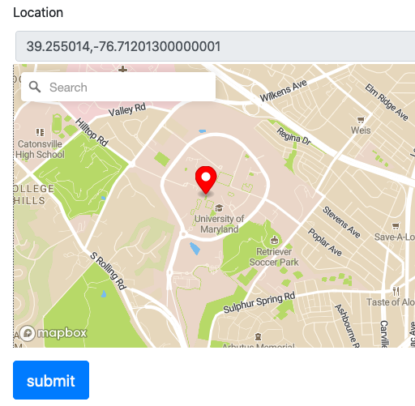

Web Development with
Python & Django: Part IV
The Admin Interface & Forms
The Django Admin Interface
- The admin interface provides a web-based graphical user interface to create, update and delete records from the database using Django models
- It reads metadata from your models when you register them and generates the interface from that
- The admin’s recommended use is as an internal management tool for a site.
- The admin isn’t intended to be used by site visitors. It’s for site managers.
Admin Customizations
The admin interface is heavily customizable.
- List views can be customized to allow for filtering and searching
- Editing views can be customized with different HTML form field types and validation behavior
Let's take a look at some examples...
Forms
- HTML forms are one of the main ways users can interact with a site
- Examples:
- Logging into an account with your username and password
- Filling out billing and shipping information to purchase something
- Posting an image or text on a social media site
- Sending an email to someone in a web-based client (like Gmail)
- HTML forms are everywhere
Using Forms
- Render an HTML form on a page for a user to fill out
- Parse the form contents when the user submits them
- Determine if the contents are valid
- If they are valid, do something with the contents. If they are not, re-display the original form to the user indicating what they did wrong.
Django's Form class can help us with all these things.
A form consists of a series of fields/inputs. What do we need to know about these fields to make a form?
- The name of the field (how we will refer to it internally)
- The label of the field (may be different from the name)
- The type of the value (text, number, boolean)
- The type of HTML widget (text box, drop down, check box, etc.)
- Whether the value is required or not
- What valid values are
Django's Form class let's us specify all these things (and more).
from django import forms
class MyForm(forms.Form):
name = forms.CharField(label="Your name",
max_length=200)
age = forms.IntegerField(label="Your age",
min_value=1,
max_value=150,
required=True)
shirt_size = forms.ChoiceField(choices=(("S", "small"),
("M", "medium"),
("L", "large"),
("XL", "x-large")))
double_order = forms.BooleanField(label="Double order?")
Rendering a form in a template
<form action="/some-url/" method="post">
{% csrf_token %}
{{ form }}
<input type="submit" value="Save">
</form>
<form action="/url/" method="post">
<input type="hidden" name="csrfmiddlewaretoken" value="KrsfY">
<label for="id_name">Your name:</label>
<input type="text" name="name" maxlength="200" required id="id_name">
<label for="id_age">Your age:</label>
<input type="number" name="age" min="1" max="150" required id="id_age">
<label for="id_shirt_size">Shirt size:</label>
<select name="shirt_size" id="id_shirt_size">
<option value="S">small</option>
<option value="M">medium</option>
<option value="L">large</option>
<option value="XL">extra large</option>
</select>
<label for="id_double_order">Double your order?</label>
<input type="checkbox" name="double_order" required id="id_double_order">
<input type="submit" value="Save">
</form>

Now what happens when we hit "save"?
Django stores the form values in a dictionary-like class on the request object
>>> request.POST)
{'age': ['29'],
'csrfmiddlewaretoken': ['TXFKW5m4vOsJjg0LXOrP3hNsiXI8XrOa'],
'double_order': ['on'],
'name': ['Ruth Smith'],
'shirt_size': ['M']}
We can hand this data directly to the form class:
form = MyForm(request.POST)
Because the form object generated the HTML <form>, it knows how to handle
the contents of the form when the user submits it.
Validating the data is an important step:
def form_view(request):
if request.method == 'POST':
form = MyForm(request.POST)
if form.is_valid():
# Handle valid form here
pass
else:
form = MyForm()
return render(request, "form.html", {"form": form})
Calling form.is_valid() will check that the contents of the form are what we expect.
If the contents are not valid, we can send that form back to the template to be rendered...
What validation does the form class do?
- Checks that the type is correct
- Makes sure required fields are present
- Ensures min/max length or number size is followed
- For choice fields, ensures what was chosen is valid.
- For date/time fields, ensures date is valid.
- Check the docs for other field type validation
You can also customize validation on a per-field basis:
from django.core.exceptions import ValidationError
def is_named_bob(value):
if "Bob" not in value:
raise ValidationError(
"Only people named Bob may apply!"
)
class MyForm(forms.Form):
name = forms.CharField(label="Your name",
max_length=200,
validators=[is_named_bob])
age = forms.IntegerField(label="Your age")
Sometimes fields may depend on each other for validation:
class MyForm(forms.Form):
name = forms.CharField(label="Your name",
max_length=200,
required=True)
age = forms.IntegerField(label="Your age",
required=True)
def clean(self):
cleaned_data = super().clean()
if cleaned_data["name"] == "Bob" \
and cleaned_data["age"] <= 30:
raise ValidationError(
"If you name is Bob, you must be over 30"
)
The validity of the form here depends on how age and name relate.
You can specify a custom widget:
class MyForm(forms.Form):
name = forms.CharField(label="Your name",
max_length=200)
age = forms.IntegerField(label="Your age",
min_value=1,
max_value=150,
required=True)
shirt_size = forms.ChoiceField(choices=(("S", "small"),
("M", "medium"),
("L", "large"),
("XL", "xlarge")),
widget=forms.RadioSelect)
double_order = forms.BooleanField(label="Double order?")
A widget is Django’s representation of an HTML input element.
Before
After
Calendar:

Rich Text:

Map:
- Sometime forms will map very closely (or even exactly) to models.
- Forms and models both consist of a series of fields.
- These fields have a lot in common:
- a name and a value
- a human-readable label
- a type for the value the value (text, number, boolean)
- whether the value is required or not
- what valid values are
- Declaring all this twice in a model would be redundant.
- Instead, use a
ModelForm
from django.db import models
from django.forms import ModelForm
class MyModel(models.Model):
name = models.CharField("Your Name", primary_key=True)
age = models.IntegerField("Your age", blank=False)
shirt_size = models.CharField(max_length=6,
choices=(("S", "small"),
("M", "medium"),
("L", "large")))
double_order = models.BooleanField("Double order?")
class MyModelForm(ModelForm):
class Meta:
model = MyModel
- You can customize model forms:
- Include a subset of the fields in a form
- Specify what widgets to use
- Declare custom validators
- Every ModelForm also has a
save()method. This method creates and saves a database object from the data bound to the form. - Django uses model forms to create the admin automatically from your models
- Model forms enable D.R.Y. programming